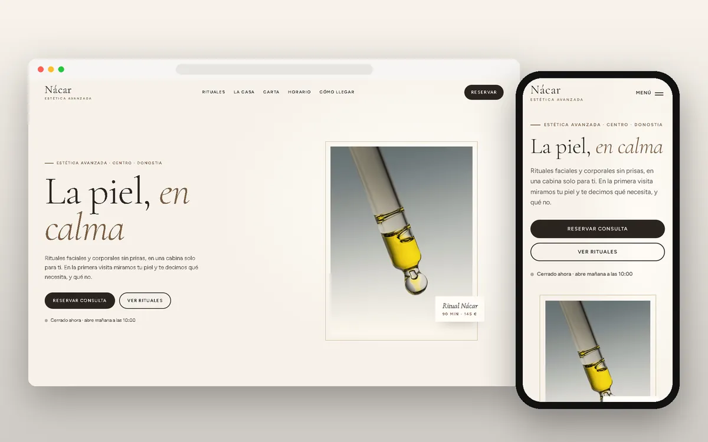
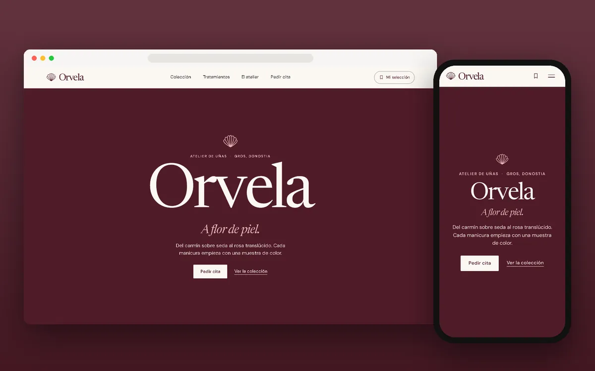
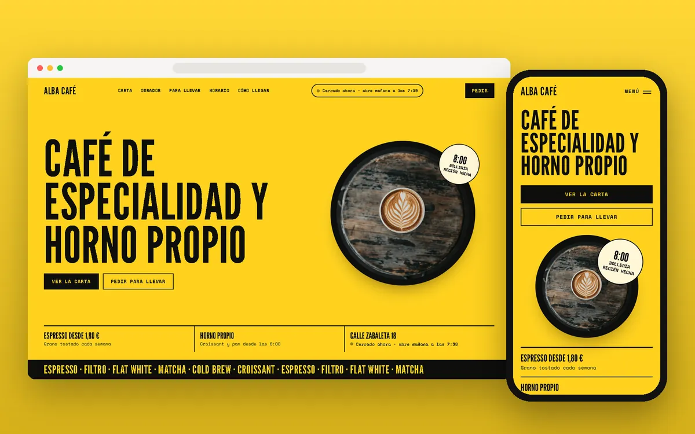

Adibideak · demoak zuzenean
Eska ditzakezun webguneen adibideak
Estiloak erakusteko asmatutako izenak dituzten demoak dira. Zureak zure izena, zure argazkiak eta zure karta edo tarifak izango ditu.

Nikkei
Argazkiak pantaila osoan, serif fina eta aire asko. Irudi ona duen lokal batentzat.
Diseinua ikusi
Bizargindegia
Azala bideo bat da: makina lanean, izen erraldoia eta prezioak begi-bistan. Bizargindegientzat.
Diseinua ikusi
Luxuzko estetika
Aire asko, serif arina eta errituak beren iraupen eta prezioarekin. Estetika-zentroentzat.
Diseinua ikusi
Manikura-aretoa
Izena handian, diseinuen bilduma eta bere kabuz idazten den hitzordu-mezua. Manikura-aretoentzat.
Diseinua ikusi
Tatuaje-estudioa
Tinta beltza, etzan erraldoia eta lanak lehenik. Tatuaje-estudioentzat.
Diseinua ikusi
Arrandegia
Arrantza-ontzi bat kaioen artean, bideoan, eta eguneko generoa bere prezioarekin. Auzoko dendentzat.
Diseinua ikusi
Tailer mekanikoa
Lan-agindu bat azalean eta prezio orientagarri argiak. Tailerrentzat.
Diseinua ikusi
Familia-supermerkatua
Fruta handian, eskaintzak prezio-etiketa gisa eta eskaera WhatsApp bidez. Auzoko dendentzat.
Diseinua ikusi
Akademia
Paper koadrikulatua, titular azpimarratua eta ikastaroak beren prezioarekin. Akademientzat.
Diseinua ikusi
Fisioterapia
Lasaitasuna, serif leuna eta «non duzu mina?» botoi gisa. Fisioterapia-kliniketarako.
Diseinua ikusi
Taberna
Serif sendoa, azulejoak eta bermuta arku batean, barrako argazkiekin. Auzoko berotasuna.
Diseinua ikusi
Kafea
Hori laua, titular erraldoia eta idazmakina-letra, orain obradorearen argazkiekin.
Diseinua ikusi
Koktelerria
Kontraste handiko serif-a eta koktela arku urdin baten barruan. Dotorea, garestia izan gabe.
Diseinua ikusi
Erretegia
Serif arina, txingarra pantaila osoan eta kiloko prezioa argi.
Diseinua ikusi
Kartela
Kale-kartela: marko gorria, letra estu erraldoia eta ramena zirkulu batean.
Diseinua ikusi
Merkatua
Argitsua eta botanikoa: serif leuna, sasoiko plater bat eta hornitzaileak agerian.
Diseinua ikusi
01 / Kontaktua
Gaur hitz egin, bihar zirriborroa
Idatzi nahi duzun bidetik. Komanda WhatsAppez jasotzen badut, zirriborroa eta epea bidaltzen dizut, konpromisorik gabe.